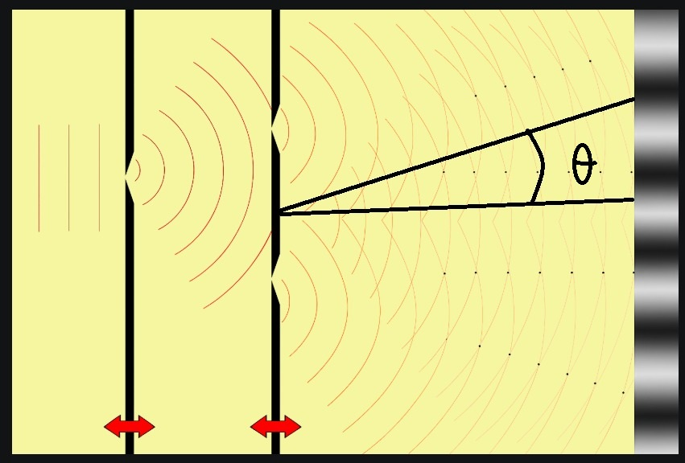
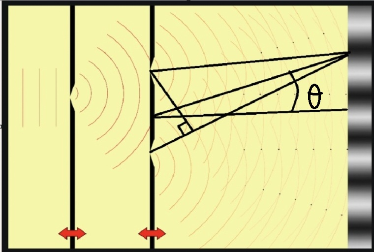
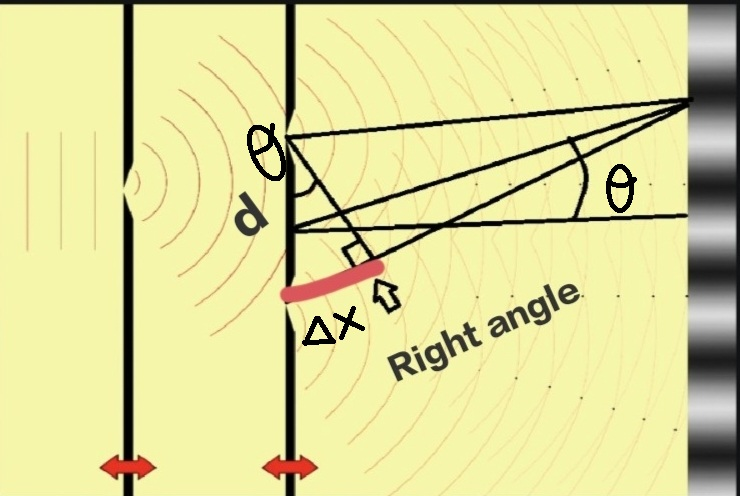
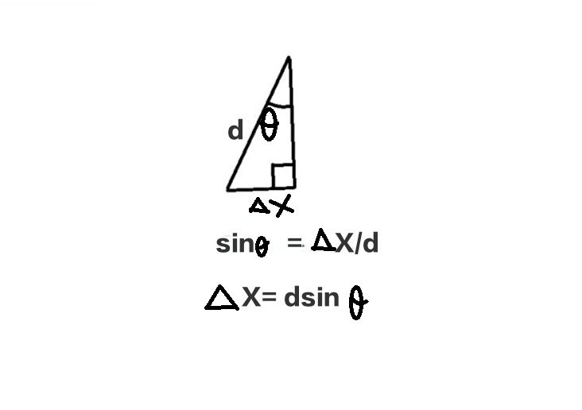

1. Introduction
Have you ever wondered whether light behaves like a particle or a wave? The Young’s double-slit experiment is a classic experiment that unveils the wave nature of light. By shining light through two narrow slits, we see an interference pattern—a clear signature of waves interacting with each other.

2. Experimental Setup
The setup is simple but powerful:
- Monochromatic light source (like a laser pointer)
- Two very narrow, closely spaced slits
- A screen placed at distance D from the slits to observe the pattern
From the figure naively, What we would have thought would have been shoot, light comes through one slit and bright spot parallel to the slit, light comes through second slit bright spot parallel to the slit, we will get two bright spots, but thats not reality, we dont get two bright spots because wave dont pass straight through a hole when wave encounters a hole or a corner it spreads out and that spreading out is called as diffraction, So thats why in the above image the wave actually spreads out and not at all a bright spot parallel to the slit.
When the waves spreads the waves from both slits overlaps each other, they overlap constructively resulting in a bright spot where they overlaps destructively resulting in a dark spot. where it's sort of half constructive-half destructive results in a mediumly bright spot or mediumly dark spot like in the figure
If you look acrefully in the figure you can see line formation following the intersecting points, those points are the crest resulting in a bright spot. you can draw a straight line from the crest to the bright spot, Peaks are lining up perfectly. The space in between the lines that point is destructive because the peak is matching up with the valley, resulting in zero amplitude. Can be seen in the screen as dark spots. This is the classic double-slit pattern produced by waves, It's caused by wave interference in two dimensions
Path length difference
Draw a reference line that goes straigth through the centerl, the centerline would allow us to measure angles. let measure angle of some point on the screen from the center line. let's call it as theta

Now draw line from center of both slits to the point on the screen and a third line cut through in right angle like in the image given below then the remainder of these paths will be equal.

.Now lets do some basic trignometry.
So, now we can see that the path length difference is Δx.

The relationship between this sinθ = Δx/d so, The path length difference for a double slit is Δx = d sinθ
The Double-Slit Formula - Δx = d sinθ
It's says mλ = d.sinθ for constructive interference, So Δx was integers times wavelength, eg: 0, λ, 2λ etc.., So, in order to get construvtive points d sinθ which is the path length difference has to equal 0, λ, 2λ . The double slit formula mλ = dsinθ - m can be 0,1,2... d is the distance between two slits θ is the angle from the center line and λ is the wavelength. But when we plug in one halves to m then that would give the angles to destructive points. Because Δx the path length difference should just equal half of λs to get the destructive. So these could give you the angles to constructive points and destructive points if you plug in the correct m value.3. Theory
When coherent light passes through the two slits, it diffracts and the waves overlap. Each wave has two parts — crests and troughs (a crest is the highest point and a trough is the lowest). When opposite parts meet, they cancel each other; when like parts meet, they reinforce each other, producing an interference pattern of bright and dark fringes on the screen.
- When crests meet crests, they strengthen → bright fringe.
- When crest meets trough, they cancel → dark fringe.
- When trough meets trough, they strenghten → bright fringe.
For small angles (θ ≈ y/D), the fringe positions can be calculated as:
The distance between two consecutive bright fringes (fringe width) is:
4. Observations
When you perform the experiment, you will notice:
- Alternating bright and dark fringes on the screen
- A central bright fringe exactly opposite the midpoint of the slits - Because of perfect symmetry. Light waves from both slits travel the exact same distance to reach this central point
- Fringe spacing is uniform and depends on λ (wavelength), D (distance to screen), and d (slit separation)
5. Significance
The experiment was pivotal in understanding light. It provided strong evidence that light behaves like a wave.
Modern experiments with electrons or photons reveal that light and matter can behave as both particles and waves,
introducing the fascinating concept of wave-particle duality.